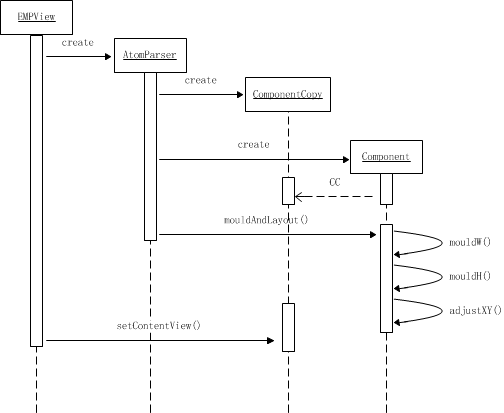

emp5.1布局流程图如下：

AtomParser：报文解析类，负责报文解析，生成控件以及结构。
ComponentCopy：报文结构、属性、样式保存。
CompositedComponent：控件视图类接口，用于从控件视图中获得其外部类与Component。
Component：抽象控件类，为所有控件父类，并包含布局算法。Component类主要方法：
1、扩展控件必须继承Component抽象类，重写initRealView（）方法并在其中初始化控件视图。
2、扩展控件必须包含AndroidView内部类，并实现CompositedComponent接口。
3、扩展控件中属性应用往往是实现在mouldH()方法中。
所以针对以上几点，再结合EMP5.2中已经抽出的样式与布局，扩展支持模块的主要任务即是运用CompositedComponent接口获取系统View与Component控件，并调用iniRealView（）方法进行View初始化，利用mouldH（）方法对控件属性进行设置。
基于EMP5.1分析，为支持并减少原扩展控件改动。现支持模块分为两部分：
由于EMP5.2将样式、布局都抽出为单独实现，因此原有基类中的样式应用与布局算法等功能为多余且不会运行，但为实现现有扩展控件移植时尽少改动的目标，因此保留其部分原有方法。
Component.java，复制自EMP5.1，该类为控件与扩展控件共有抽象基类，也是所有控件必须继承的抽象类。为使兼容EMP5.2使其实现GUIView接口，并在接口方法onBindElement方法中完成属性设置、视图创建与绑定；onBuildLayout方法中完成样式与布局初始化；
LPLayout.java，复制自EMP5.1。去除其样式布局与排版算代码，作为容器类扩展控件的基类。 其它类，为实现尽少改动现有扩展控件代码目标，将EMP5.1中常用的字符常量、工具类、主Activity等复制到新工程中，并保留其目录结构与名称；
ExpandEMPGUIFactory.java ，继承自AndroidGUIFactory类，并复写onCreateGUIView、onLinkView两方法。onCreateGUIView方法负责创建Component控件对象并与节点绑定；onLinkView方法负责将其添加到父View中。
ExpandEMPBuilder.java，继承自AndroidEMPBuilder类，复写buildGUIFactory方法，完成ExpandEMPGUIFactory的创建。
BelongComponent.java，接口，用于标识扩展控件是否需要利用AndroidGUIFactory类中onLinkView方法来将其添加到父View中。
如：LPGridViewMe类中的内部类MyLPGridViewMe，继承自Android GridView。其利用Adapter模式添加子View，使用addView()方式添加将报异常。为解决此类问题，现创建BelongComponent接口，并使LPMenuM实现该接口。在ExpandEMPGUIFactory中判断该类是否实现BelongComponent接口，如果是则返回。
以北京银行扩展控件为例，其九宫格页面报文片段如下：
<div name="div_menu" border="0" type="div_scroll">
<scroll name="menu_div" page="4" callback="current" >
<page index="1" eachLineCounts="4" select="1" >
<menu ...>快捷查询</menu>
<menu ...>账户查询</menu>
</page>
<page ...>
...
</page>
</scroll>
</div>
由报文确认将增加4个扩展控件，分别对应LPDivScrollBJ.java、LPViewPagerMe.java、LPGridViewMe.java、LPMenuMe.java四个类。
现将上述4个类移植流程说明。
LPGridViewMe.java
LPMenuMe.java